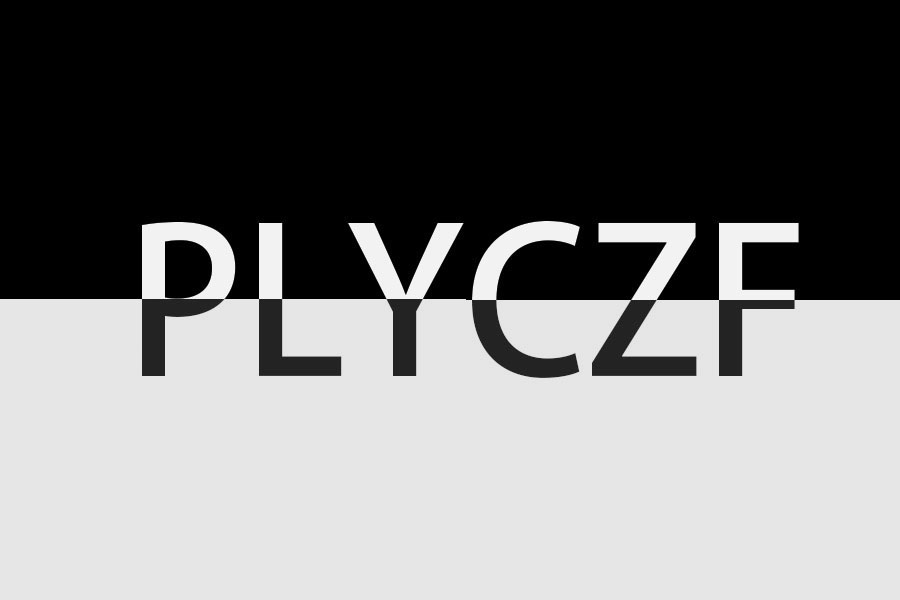

The video is my porfolio for my Modeling Set. I modeled chandelier,stairs and some simple fire effects. Check out my Gallery page to see more previous work.
This photo is my first PhotoShop project. I used masking to make that effects. I first typed in the word, and put the white mask on to create an black-white and upside-down effects. Check out my gallery page to see more.
The video is my first AE project.I made an loading animation for my webiste. It's pretty cool becasue you can see the little waves when the loading completed. Check out the gallery to find more.